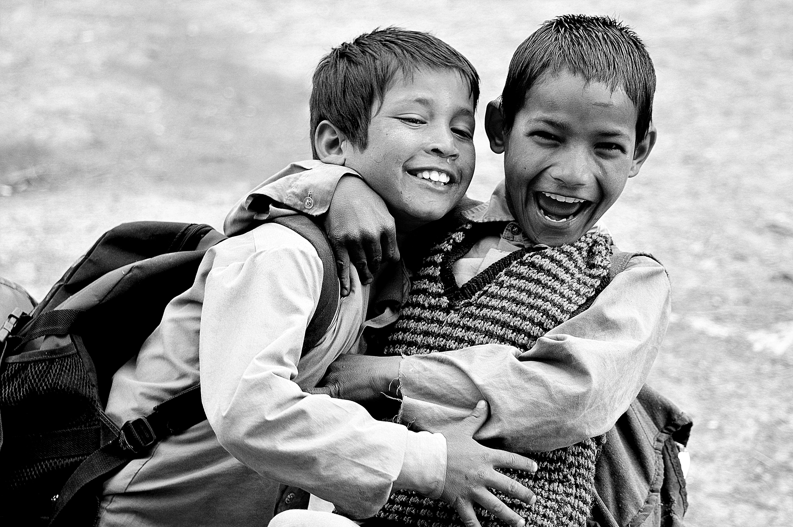

Good Old Days

Two young friend with no worries of
the rules of the world enjoying themselves.
Childhood friendships are one of the hardest relationships to maintain when you move forward into adulthood.
Whether you move away, fall out or simply drift apart, we always remember our childhood mates.
Because after all, it was these friends who were there for us as we navigated puberty!
Feelings for childhood friends showed by some quotes:)
It is one of the blessings of old friends that you can
afford to be stupid with them.
Ralph Waldo Emerson